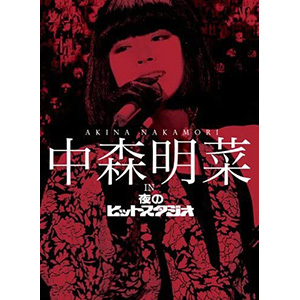

现场视频：第14张
发行年份：2010年
发行日期：12月22日
Disc 1（1982年 - 1984年）
| 歌名 | 作词 | 作曲 | 放送 |
|---|---|---|---|
| 少女A | 売野雅勇 | 芹澤廣明 | 1982年9月20日 |
| サンタが町にやってくる | 神戸孝夫 | フレッド・クーツ | 1982年12月20日 |
| セカンド・ラブ | 来生えつこ | 来生たかお | 1982年12月20日 |
| ドラマティック・レイン | 秋元康 | 筒美京平 | 1983年3月7日 |
| 1⁄2の神話 | 売野雅勇 | 大沢誉志幸 | 1983年3月7日 |
| 恋の暴走 | 安井かずみ | 馬飼野康二 | 1983年4月4日 |
| 1⁄2の神話 | 売野雅勇 | 大沢誉志幸 | 1983年4月4日 |
| 僕笑っちゃいます | 欽ちゃんバンド・森雪之丞 | 吉田拓郎 | 1983年6月13日 |
| トワイライト -夕暮れ便り- | 来生えつこ | 来生たかお | 1983年6月13日 |
| ひとりごと | 中山大三郎 | 中山大三郎 | 1983年7月11日 |
| トワイライト -夕暮れ便り- | 来生えつこ | 来生たかお | 1983年7月11日 |
| 想い出がいっぱい | 阿木燿子 | 鈴木キサブロー | 1983年8月15日 |
| トワイライト -夕暮れ便り- | 来生えつこ | 来生たかお | 1983年8月15日 |
| 想い出がいっぱい | 阿木燿子 | 鈴木キサブロー | 1983年9月12日 |
| 禁区 | 売野雅勇 | 細野晴臣 | 1983年9月12日 |
| 北酒場 | なかにし礼 | 中村泰士 | 1983年10月3日 |
| 禁区 | 売野雅勇 | 細野晴臣 | 1983年10月3日 |
| よこはま・たそがれ | 山口洋子 | 平尾昌晃 | 1983年11月14日 |
| 禁区 | 売野雅勇 | 細野晴臣 | 1983年11月14日 |
| 涙のリクエスト | 売野雅勇 | 芹澤廣明 | 1984年7月23日 |
| 十戒 (1984) | 売野雅勇 | 高中正義 | 1984年7月23日 |
| 前略、道の上より | セピア | GOTO | 1984年8月20日 |
| 十戒 (1984) | 売野雅勇 | 高中正義 | 1984年8月20日 |
| バージンブルー | さがらよしあき | 鈴木キサブロー | 1984年9月10日 |
| 十戒 (1984) | 売野雅勇 | 高中正義 | 1984年9月10日 |
| 哀愁でいと | 小林和子 | Andrew Joseph DiTarantoGuy Hemric | 1984年10月29日 |
| 十戒 (1984) | 売野雅勇 | 高中正義 | 1984年10月29日 |
| 恋＝はDo! | 小林和子 | 小田裕一郎 | 1984年11月19日 |
| 飾りじゃないのよ涙は | 井上陽水 | 井上陽水 | 1984年11月19日 |
| 飾りじゃないのよ涙は | 井上陽水 | 井上陽水 | 1984年12月17日 |
| ラ・ヴィアンローズ | 売野雅勇 | 大沢誉志幸 | 1985年2月11日 |
| 飾りじゃないのよ涙は | 井上陽水 | 井上陽水 | 1985年2月11日 |
Disc 2（1985年 - 1986年）
| 歌名 | 作词 | 作曲 | 放送 |
|---|---|---|---|
| 薔薇の鎖 | たかたかし | 鈴木邦彦 | 1985年3月11日 |
| ミ・アモーレ〔Meu amor é･･･〕 | 康珍化 | 松岡直也 | 1985年3月11日 |
| 涙のリクエスト | 売野雅勇 | 芹澤廣明 | 1985年5月1日 |
| ミ・アモーレ〔Meu amor é･･･〕 | 康珍化 | 松岡直也 | 1985年5月1日 |
| 顔に書いた恋愛小説 | 三浦徳子 | 網倉一也 | 1985年5月29日 |
| ミ・アモーレ〔Meu amor é･･･〕 | 康珍化 | 松岡直也 | 1985年5月29日 |
| 原宿キッス | 宮下智 | 筒美京平 | 1985年6月19日 |
| SAND BEIGE -砂漠へ- | 許瑛子 | 都志見隆 | 1985年6月19日 |
| ふたりの夏物語 | 康珍化 | 林哲司 | 1985年7月10日 |
| SAND BEIGE -砂漠へ- | 許瑛子 | 都志見隆 | 1985年7月10日 |
| 紐育物語 | 松本隆 | 細野晴臣 | 1985年9月11日 |
| 椿姫ジュリアーナ | 松本一起 | 佐藤隆 | 1985年9月11日 |
| ジェラス・ガイ | 大友康平 | 蓑輪単志 | 1985年10月9日 |
| SOLITUDE | 湯川れい子 | タケカワユキヒデ | 1985年10月9日 |
| FU・RI・NE | 裕美 | 都志見隆 | 1985年10月30日 |
| SOLITUDE | 湯川れい子 | タケカワユキヒデ | 1985年10月30日 |
| あの娘とスキャンダル | 売野雅勇 | 芹澤廣明 | 1985年11月27日 |
| SOLITUDE | 湯川れい子 | タケカワユキヒデ | 1985年11月27日 |
| そっとおやすみ | クニ河内 | クニ河内 | 1985年12月18日 |
| SOLITUDE | 湯川れい子 | タケカワユキヒデ | 1985年12月18日 |
| ママがサンタにキッスした | 漣健児 | トミー・コーナー | 1985年12月25日 |
| SOLITUDE | 湯川れい子 | タケカワユキヒデ | 1985年12月25日 |
| ff (フォルティシモ) | 松尾由紀夫 | 蓑輪単志 | 1986年2月5日 |
| DESIRE -情熱- | 阿木燿子 | 鈴木キサブロー | 1986年2月5日 |
| 東京爆発娘! | 森雪之丞 | 後藤次利 | 1986年2月26日 |
| DESIRE -情熱- | 阿木燿子 | 鈴木キサブロー | 1986年2月26日 |
| １ダースの言い訳 | 秋元康 | 林哲司 | 1986年4月2日 |
| DESIRE -情熱- | 阿木燿子 | 鈴木キサブロー | 1986年4月2日 |
| 関白宣言 | さだまさし | さだまさし | 1986年4月30日 |
| DESIRE -情熱- | 阿木燿子 | 鈴木キサブロー | 1986年4月30日 |
Disc 3（1986年 - 1987年）
| 歌名 | 作词 | 作曲 | 放送 |
|---|---|---|---|
| April | 秋元康 | 木戸やすひろ | 1986年5月28日 |
| ジプシー・クイーン | 松本一起 | 国安わたる | 1986年5月28日 |
| ギンギラギンにさりげなく | 伊達歩 | 筒美京平 | 1986年6月18日 |
| ジプシー・クイーン | 松本一起 | 国安わたる | 1986年6月18日 |
| 炎 | 阿久悠 | 馬飼野康二 | 1986年7月9日 |
| ジプシー・クイーン | 松本一起 | 国安わたる | 1986年7月9日 |
| 一気! | 秋元康 | 見岳章 | 1986年8月6日 |
| ジプシー・クイーン | 松本一起 | 国安わたる | 1986年8月6日 |
| YOUNG MAN | あまがいりゅうじ | Jacques Morali | 1986年9月24日 |
| Fin | 松本一起 | 佐藤健 | 1986年9月24日 |
| Romanticが止まらない | 松本隆 | 筒美京平 | 1986年10月8日 |
| Fin | 松本一起 | 佐藤健 | 1986年10月8日 |
| モニカ | 三浦徳子 | NOBODY | 1986年11月12日 |
| Fin | 松本一起 | 佐藤健 | 1986年11月12日 |
| 君は1000% | 有川正沙子 | 和泉常寛 | 1986年12月3日 |
| Fin | 松本一起 | 佐藤健 | 1986年12月3日 |
| ママがサンタにキッスした | 漣健児 | トミー・コーナー | 1986年12月24日 |
| TerminalまでのEve | 伊達歩 | 井上大輔 | 1986年12月24日 |
| 前略、道の上より | セピア | GOTO | 1987年1月21日 |
| TANGO NOIR | 冬杜花代子 | 都志見隆 | 1987年1月21日 |
| Back door night〜マリオネット | 麻生圭子・安岡孝章 | EUROX・安岡孝章 | 1987年2月4日 |
| 襟裳岬 | 岡本おさみ | 吉田拓郎 | 1987年2月11日 |
| TANGO NOIR | 冬杜花代子 | 都志見隆 | 1987年2月11日 |
| 熱き心に | 阿久悠 | 大瀧詠一 | 1987年2月18日 |
| 約束 | 竹内まりや | 竹内まりや | 1987年2月18日 |
| 仮面舞踏会 | ちあき哲也 | 筒美京平 | 1987年2月25日 |
| 少女A〜1⁄2の神話〜飾りじゃないのよ涙は〜DESIRE -情熱- | 売野雅勇・井上陽水・阿木燿子 | 芹澤廣明・大沢誉志幸・井上陽水・鈴木キサブロー | 1987年2月25日 |
| デカメロン伝説 | 秋元康 | 筒美京平 | 1987年3月25日 |
| TANGO NOIR | 冬杜花代子 | 都志見隆 | 1987年3月25日 |
| シーズン・イン・ザ・サン | 亜蘭知子 | 織田哲郎 | 1987年4月29日 |
| OH NO, OH YES! | 竹内まりや | 竹内まりや | 1987年4月29日 |
Disc 4（1987年 - 1988年）
| 歌名 | 作词 | 作曲 | 放送 |
|---|---|---|---|
| あの娘とスキャンダル | 売野雅勇 | 芹澤廣明 | 1987年6月10日 |
| BLONDE | Biddu・Winston Sela・麻生圭子 | Biddu・Winston Sela | 1987年6月10日 |
| 南回帰線 | 山川啓介 | 堀内孝雄 | 1987年7月15日 |
| BLONDE | Biddu・Winston Sela・麻生圭子 | Biddu・Winston Sela | 1987年7月15日 |
| 清教徒（アーミッシュ） | 秋元康 | 久保田利伸 | 1987年8月12日 |
| 甘い十字架 | 安井かずみ | 加瀬邦彦 | 1987年9月16日 |
| BLONDE | Biddu・Winston Sela・麻生圭子 | Biddu・Winston Sela | 1987年9月16日 |
| 少女A | 売野雅勇 | 芹澤廣明 | 1987年9月30日 |
| 全部给你看！明菜的5年零10天 / 少女A / セカンド・ラブ / 1⁄2の神話 / トワイライト -夕暮れ便り- / 禁区 / 十戒 (1984) / 飾りじゃないのよ涙は / ミ・アモーレ〔Meu amor é･･･〕/ SAND BEIGE -砂漠へ- / 椿姫ジュリアーナ / SOLITUDE / 恋人のいる時間 / DESIRE -情熱- / ジプシー・クイーン / Fin / TerminalまでのEve / TANGO NOIR / マリオネット / 約束 / 少女A / OH NO, OH YES! / ミック・ジャガーに微笑みを / 清教徒（アーミッシュ）/ BLONDE | 売野雅勇・来生えつこ・井上陽水・康珍化・許瑛子・松本一起・湯川れい子・SHOW・阿木燿子・伊達歩・冬杜花代子・安岡孝章・竹内まりや・秋元康 Biddu・Winston Sela・麻生圭子 | 芹澤廣明・来生たかお・大沢誉志幸・細野晴臣・高中正義・井上陽水・松岡直也・都志見隆・佐藤隆・タケカワユキヒデ・神保彰・鈴木キサブロー・国安わたる・佐藤健・井上大輔・安岡孝章・竹内まりや・久保田利伸・Biddu・Winston Sela | 1987年9月30日 |
| 難破船 | 加藤登紀子 | 加藤登紀子 | 1987年9月30日 |
| 北酒場 | なかにし礼 | 中村泰士 | 1987年10月14日 |
| 難破船 | 加藤登紀子 | 加藤登紀子 | 1987年10月14日 |
| 愛しのサブリナ | 許瑛子 | 中崎英也 | 1987年11月4日 |
| 難破船 | 加藤登紀子 | 加藤登紀子 | 1987年11月4日 |
| 飾りじゃないのよ涙は | 井上陽水 | 井上陽水 | 1987年12月2日 |
| 難破船 | 加藤登紀子 | 加藤登紀子 | 1987年12月2日 |
| 難破船 | 加藤登紀子 | 加藤登紀子 | 1988年1月6日 |
| 君のひとみは10000ボルト | 谷村新司 | 堀内孝雄 | 1988年1月27日 |
| AL-MAUJ (アルマージ) | 大津あきら | 佐藤隆 | 1988年1月27日 |
| 北ウイング | 康珍化 | 林哲司 | 1988年2月3日 |
| AL-MAUJ (アルマージ) | 大津あきら | 佐藤隆 | 1988年2月3日 |
| TANGO NOIR (VTR) | 冬杜花代子 | 都志見隆 | 1988年2月10日 |
| 悲しみにさよなら | 松井五郎 | 玉置浩二 | 1988年3月9日 |
| AL-MAUJ (アルマージ) | 大津あきら | 佐藤隆 | 1988年3月9日 |
| 薔薇一夜 | 大津あきら | 鈴木キサブロー | 1988年3月30日 |
| STAR LIGHT | 飛鳥涼 | チャゲ&飛鳥 | 1988年5月18日 |
| TATTOO | 森由里子 | 関根安里 | 1988年5月18日 |
| お嫁サンバ | 三浦徳子 | 小杉保夫 | 1988年6月1日 |
| TATTOO | 森由里子 | 関根安里 | 1988年6月1日 |
| 紐育物語 | 松本隆 | 細野晴臣 | 1988年6月22日 |
| TATTOO | 森由里子 | 関根安里 | 1988年6月22日 |
| TATTOO | 森由里子 | 関根安里 | 1988年7月13日 |
Disc 5（1988年 - 1990年）
| 歌名 | 作词 | 作曲 | 放送 |
|---|---|---|---|
| 少女A | 売野雅勇 | 芹澤廣明 | 1988年9月7日 |
| So Mad | 冬杜花代子 | 関根安里 | 1988年9月7日 |
| 恋するような友情を | 阿久悠 | 都志見隆 | 1988年9月21日 |
| La Liberté | 森由里子 | ジョーイ・カーボーン | 1988年9月21日 |
| 抱きしめていて | 冬杜花代子 | ジュリー・モリソン | 1988年10月5日 |
| I MISSED “THE SHOCK” | Qumico Fucci | Qumico Fucci | 1988年11月9日 |
| チャンスは一度 | たかたかし | 鈴木邦彦 | 1988年11月23日 |
| I MISSED “THE SHOCK” | Qumico Fucci | Qumico Fucci | 1988年11月23日 |
| 待っている女 | 山口洋子 | 藤本卓也 | 1988年12月14日 |
| I MISSED “THE SHOCK” | Qumico Fucci | Qumico Fucci | 1988年12月14日 |
| TATTOO | 森由里子 | 関根安里 | 1988年12月28日 |
| I MISSED “THE SHOCK” | Qumico Fucci | Qumico Fucci | 1988年12月28日 |
| DAYBREAK | 大津あきら | Mark Davis | 1989年1月18日 |
| BILITIS | 許瑛子 | 吉実明宏 | 1989年1月18日 |
| TANGO NOIR | 冬杜花代子 | 都志見隆 | 1989年3月29日 |
| SOFT TOUCH | Steve Skaith・Steve Jeffries | Steve Skaith・Steve Jeffries | 1989年3月29日 |
| ガラスの十代 | 飛鳥涼 | 飛鳥涼 | 1989年4月26日 |
| LIAR | 白峰美津子 | 和泉一弥 | 1989年4月26日 |
| stripe blue | 松本隆 | 筒美京平 | 1989年5月24日 |
| LIAR | 白峰美津子 | 和泉一弥 | 1989年5月24日 |
| My Revolution | 川村真澄 | 小室哲哉 | 1989年6月21日 |
| Blue On Pink | 三浦徳子 | 国安わたる | 1989年6月21日 |
| Dear Friend〜CARIBBEAN | 伊東真由美・大西美帆 | 和泉一弥 | 1990年8月1日 |
| サザン・ウインド | 来生えつこ | 玉置浩二 | 1990年8月22日 |
| Dear Friend | 伊東真由美 | 和泉一弥 | 1990年8月22日 |
Disc 6（1991年 - 1995年）
| 歌名 | 作词 | 作曲 | 放送 |
|---|---|---|---|
| 夜ヒット中森明菜特辑（VTR）/ セカンド・ラブ / 禁区 / 飾りじゃないのよ涙は / ミ・アモーレ〔Meu amor é･･･〕/ DESIRE -情熱- / TANGO NOIR / 難破船 / Dear Friend | 来生えつこ・売野雅勇・井上陽水・康珍化・阿木燿子・冬杜花代子・加藤登紀子・伊東真由美 | 来生たかお・細野晴臣・井上陽水・松岡直也・鈴木キサブロー・都志見隆・加藤登紀子・和泉一弥 | 1990年12月26日 |
| スローモーション〜二人静 -「天河伝説殺人事件」より | 来生えつこ・松本隆 | 来生たかお・関口誠人 | 1991年4月3日 |
| 二人静 -「天河伝説殺人事件」より | 松本隆 | 関口誠人 | 1991年7月3日 |
| 駅〜Everlasting Love | 竹内まりや・大貫妙子 | 竹内まりや・坂本龍一 | 1993年3月31日 |
| 月華 | 松井五郎 | 梶原秀剛 | 1994年10月12日 |
| ミ・アモーレ〔Meu amor é･･･〕〜LA BOHÈME〜Rose Bud〜TATTOO | 康珍化・湯川れい子・夏野芹子・森由里子 | 松岡直也・都志見隆・後藤次利・関根安里 | 1994年12月24日 |
| スローモーション〜愛撫 | 来生えつこ・松本隆 | 来生たかお・小室哲哉 | 1995年4月5日 |
| 飾りじゃないのよ涙は〜Tokyo Rose | 井上陽水・中森明菜・上澤津孝 | 井上陽水・Masaki | 1995年12月23日 |
特典映像 富士电视台秘蔵映像集 FNS歌謡祭
| 歌名 | 作词 | 作曲 | 備考 |
|---|---|---|---|
| 十戒 (1984) | 売野雅勇 | 高中正義 | ‘84優秀歌謡音楽賞 |
| 北ウイング | 康珍化 | 林哲司 | ‘84最優秀金曲賞 |
| 飾りじゃないのよ涙は | 井上陽水 | 井上陽水 | ‘85最優秀金曲賞 |
| ミ・アモーレ〔Meu amor é･･･〕 | 康珍化 | 松岡直也 | ‘85大奖 |
| DESIRE -情熱- | 阿木燿子 | 鈴木キサブロー | ‘86大奖 |
| 難破船 | 加藤登紀子 | 加藤登紀子 | ‘87最優秀歌唱賞 |
| I MISSED “THE SHOCK” | Qumico Fucci | Qumico Fucci | ‘88最優秀歌唱賞 |
明星公开（秘）報告
| NYでHOLD UP！！本場の恐怖に大号泣！！ |
| ファンが車で篭城 誠意ある説得 |
首发规格：6DVD: POBD-22017/22
唱片公司：Universal Music
排行榜：Oricon公信榜DVD音楽周榜第14位